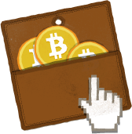

Schritt 1 - Besorgen Sie sich eine Brieftasche
Das originale Bitcoin Programm ist freie, open-source Software. Die aktuelle Version ist 0.8.5, Sie können sie hier herunterladen:

Windows
Windows Setup (9.2MB)

Mac
Mac Installer (12.0MB)

Linux
Code & Binaries (11.1MB)
Nach dem herunterladen können Sie das Programm auf Ihrem Windows, Mac oder Linux Computer installieren. Es erstellt automatisch eine Brieftasche für Sie und beginnt mit dem Download der Transaktionshistorie. (Zukünftige Versionen werden einen "lightweight Modus" haben, bei dem dies nicht mehr nötig ist.)
Ein anderer Weg an eine Brieftasche zu kommen ist es sich online auf Kraken oder Bitcoin Armory Wallet anzumelden. Hierbei müssen Sie nichts herunterladen. Sie müssen aber aufpassen, dass Sie Ihr Passwort nicht verlieren und vertrauen, dass die Seite Ihre Brieftasche sicher aufbewahrt.
Wenn Sie Ihre Brieftasche erstellt haben, erhalten Sie Ihre erste Bitcoin-Adresse, mit der Sie bereits Bitcoin empfangen können!
Schritt 2 - Erhalten Sie Bitcoins

Nicht der bequemste Weg, aber verschiedene Bonusprogramme offerieren Ihnen kleine Bitcoinbeträge, wenn Sie andere Einkäufe machen, Umfragen ausfüllen usw.

Sehen Sie auf LocalBitcoins.com und TradeBitcoin.com nach, ob sich Bitcoinianer in Ihrer Nähe befinden! Physische Bitcoins sind erhältlich bei Casascius. Diese akzeptieren nur Bitcoins. Sie können welche aber mit einer Kreditkarte auf MemoryDealers kaufen. Sie bezahlen ein wenig mehr für die Produktion und Lieferung, es ist aber ein relativ einfacher Weg um an Bitcoins zu kommen. Physische Bitcoins sind ausserdem ein tolles Geschenk!!

Für grössere Mengen an Bitcoins gibt es mehrere Bitcoin-Börsen wie zum Beispiel Kraken. Wenn Sie lieber nicht mit einer Börse arbeiten und direkt mit anderen Personen tauschen möchten besuchen Sie Bitcoin OTC.
Was kann ich mit meinen Bitcoins machen?
Sie können eine Vielzahl von Bitcoindiensten auf der Handelsseite im Bitcoin Wiki finden.
Besuchen Sie ausserdem das grösste Bitcoin-Auktionshaus auf BitMit!
Eine immer grössere Anzahl an lokalen Geschäften, Restaurants und andere Veranstalter akzeptieren Bitcoins. Auf Bitcoin Travel and können Sie nachsehen, ob sich jemand in Ihrer Nähe befindet.
Wandeln Sie Ihre Bitcoins in Geschenkkarten von Amazon, Barnes & Noble, iTunes und vielen anderen auf SpendBitcoins.com um. Oder kaufen Sie sich Prepaid-Codes für XBoxLive, PSN oder iTunes online unter Bitcoincodes.com.
Kaufen Sie sich Musik, Bücher, Fotos und andere digitale Güter auf CoinDL!
Vielleicht besuchen Sie das Bitcoin Marktplatz Forum auf Bitcoin.org.
Außerbörsliche Geschäfte können über den IRC chat auf Bitcoin OTC (#bitcoin-otc bei Freenode) getätigt werden.